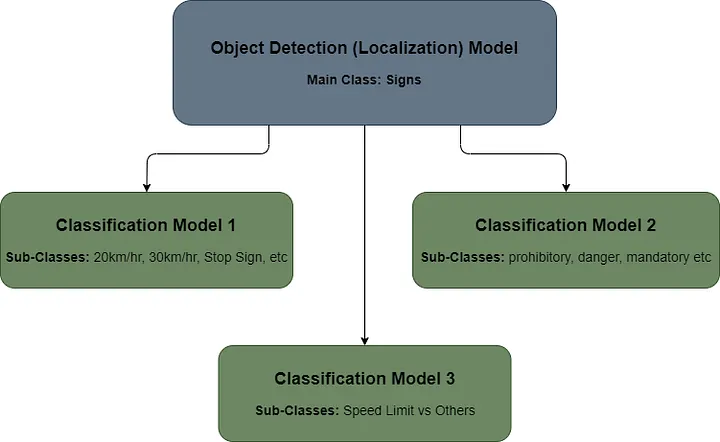
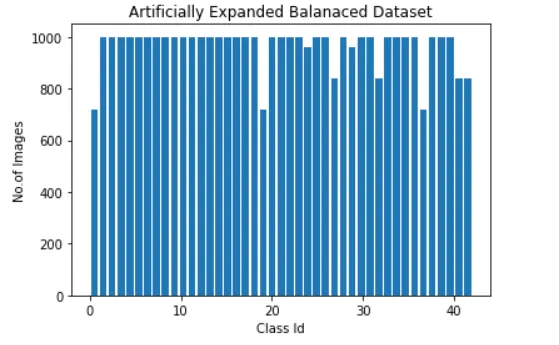
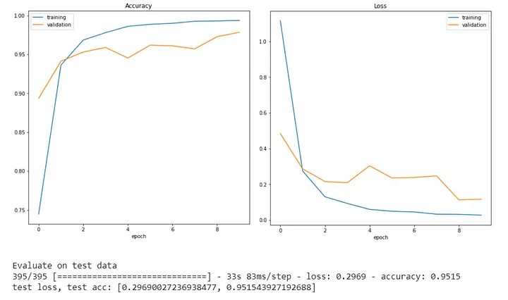
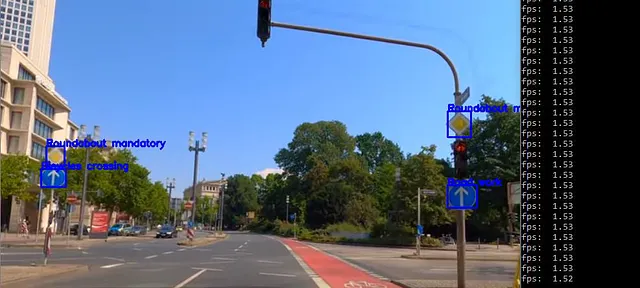
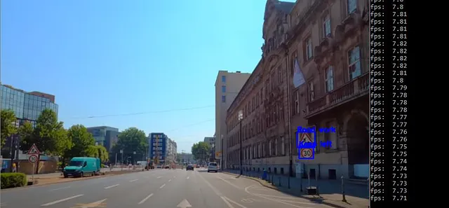

Traffic Sign Detection using TensorFlow and YOLOv3 / YOLOv4
Summary
A two-stage traffic sign pipeline: YOLO detects where signs are, and a custom convolutional neural network (CNN) classifies each detected sign into one of 43 classes. The CNN reaches 95% accuracy on the test set. The pipeline runs on an NVIDIA Jetson Nano, at 1.53 detections per second with YOLOv3 and 7.72 per second with YOLOv4-Tiny.
Idea
Labelling and training a large detection dataset takes a lot of time. Instead, detection is trained once for a single main class (signs), and separate classification models are trained to sort detections into sub-classes such as speed limits or stop signs. Training a classifier is easier and faster than retraining a detector.

Detection with YOLO
YOLOv3 and YOLOv4-Tiny were trained on the German traffic sign dataset, which has 4 classes (prohibitory, danger, mandatory and other), using Darknet on Google Colab. The architecture was modified from 80 COCO classes to 4, which changes the number of filters at the output layers from 255 to 27, and training continued from downloaded pretrained weights.
Classification with a custom CNN
- Data: 43 sign classes at 32×32 pixels. The classes were unbalanced, so each class was capped at 250 images, which removed more than half of the data. The set was then expanded with random zoom, pan and brightness changes.
- Model: 5 convolutional layers and 4 dense layers built in Keras and TensorFlow, trained with a learning rate of 0.0001, categorical cross-entropy, batch size 32 and 10 epochs.
- Result: 95% accuracy on the test set. A lower accuracy is expected in real-time use because of the low image quality in the dataset.


Real-time results on a Jetson Nano
Both detectors worked on the Jetson Nano, using previously saved images since no camera was available. Speed and accuracy were then tested on a live video feed. The classification model is the same for both, so its accuracy is similar.
| Detector | Detection rate | Observation |
|---|---|---|
| YOLOv3 | 1.53 per second | More accurate; detects more signs |
| YOLOv4-Tiny | 7.72 frames per second | Much faster; less accurate |


Takeaways and limits
- As a proof of concept, classification can be added on top of one detection model, and the pipeline runs on an embedded computer.
- YOLOv3 is more accurate but slower; YOLOv4-Tiny trades accuracy for speed.
- The CNN makes some wrong predictions because 32×32 images are low quality and the network is only a few layers deep.